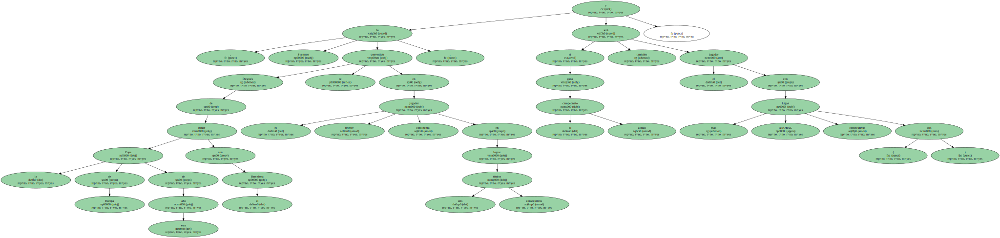
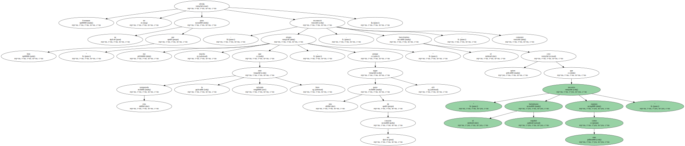
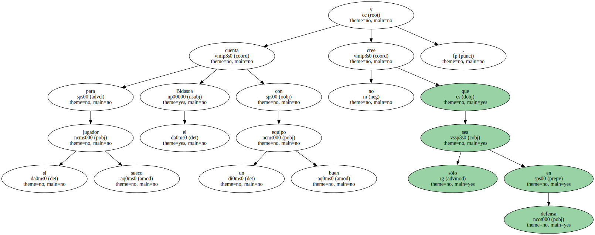
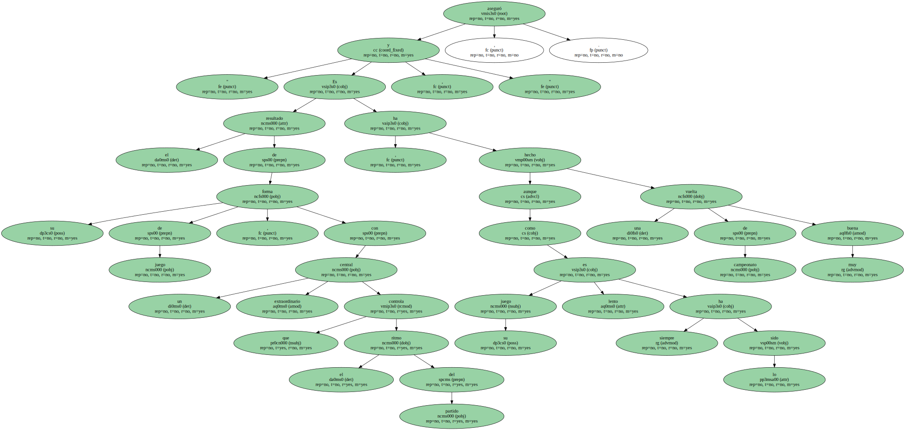
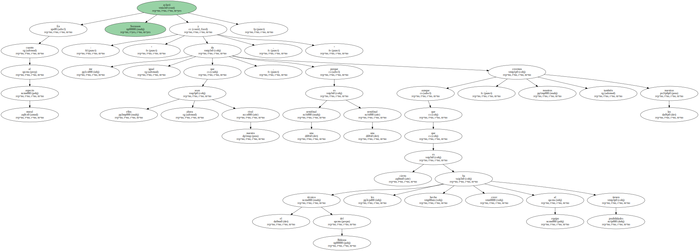

El meta internacional sueco del Barcelona , Tomas Svensson , talismán del Bidasoa en su etapa con el equipo de Irún , con el que logró la Copa de Europa y la Liga ASOBAL ( 1994/95 ) y " bestia negra " del que hoy es su equipo , desveló que una parte de su corazón está con el Bidasoa.

Después de ganar la Copa de Europa de este año con el Barcelona , Svensson se ha convertido en el primer jugador continental en lograr seis títulos consecutivos , y si gana el actual campeonato será también el jugador con más Ligas ASOBAL consecutivas ( seis ).
Svensson no olvida su paso por Irún : " me alegro mucho que esta temporada le esté saliendo bien , porque una parte de mi corazón sigue allí " , reconoció el barcelonista quien cree que " el balonmano español necesita equipos como éste " , comentó.
para el jugador sueco el Bidasoa cuenta con un buen equipo y no cree que sea sólo en defensa.
" Es el resultado de su forma de juego , con un central extraordinario que controla el ritmo del partido , y aunque su juego es lento como siempre lo ha sido , ha hecho una vuelta de campeonato muy buena " , aseguró.
En cuanto al aspecto moral Svensson aclaró : " me da igual que ellos sean ahora nuestro rival , porque una semifinal es una semifinal , y aunque es cierto que el técnico del Bidasoa les ha hecho creer al equipo que tienen posibilidades , nosotros también creemos las nuestras ".
